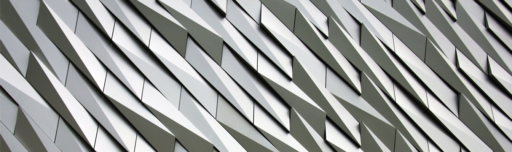
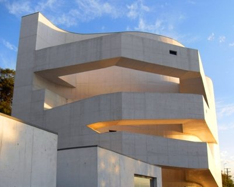
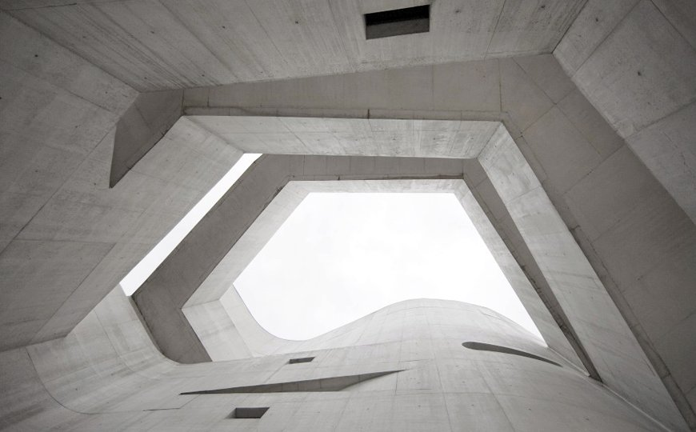
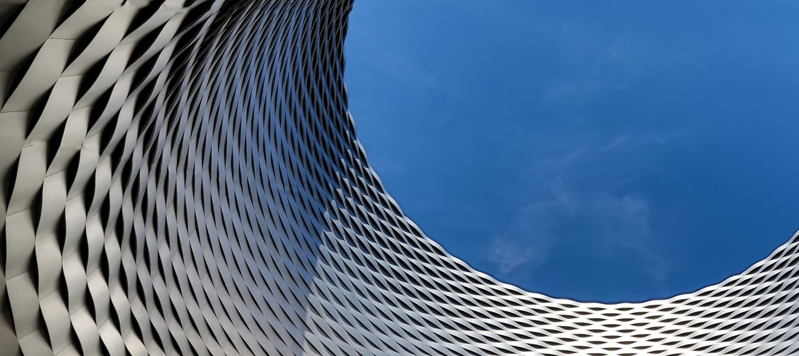
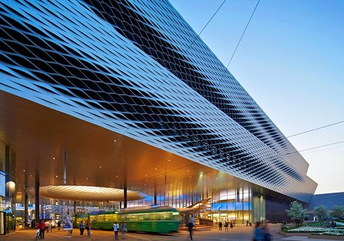
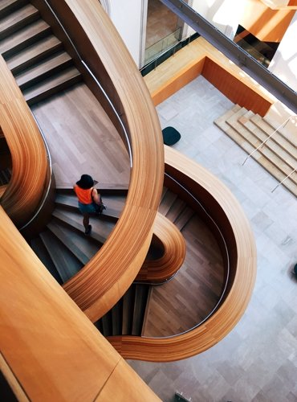
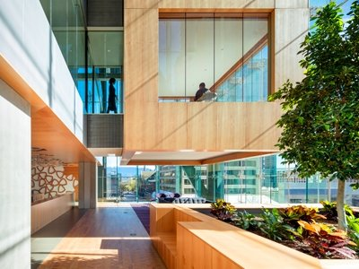

Our work is not about form follows
function but form follows beauty

Featured
Project


Porto Alegre, Brazil
year 2003
1350.0 sqm
Iberê Camargo Foundation
It could have been, if the projection had ended in the trace of a pure rule. It could have been
almost the same: three elevated plans, each formed by three rectangular exhibitions rooms,
placed at
two consecutive faces and connected by ramps that run on the two other faces. Then, a
four-story-high
atrium rises between circulations and rooms,
creating a diagonal symmetry inside the building.
But the building is not just a rule. It is mainly the materialization of a set of variations.
Basel, Switzerland

year 2003
83297.0 sqm

Messe Basel New Hal
The concentration of exhibition halls around the Messeplatz is the key
entrepreneurial aim of the Messe Basel leadership in its further development. Building the Messe
Tower and replacing Hall 1 with a highly modern building and optimum exhibition areas were the
first
components in this strategy, followed by the continuing construction of new halls.
Viewed from the outside, exhibition halls are actually nothing more than
a
stack of big boxes. They require very few windows and architectural distinctions are deemed as
impractical restrictions on interior flexibility.
The architectural results are generally composed of vast, monotonous facades of brick as in Hall
2
or glass for Hall 1.
Interior
Design

Vancouver, Canada

An interior designer is someone who plans, researches, coordinates, and manages such
projects.
Interior design is a multifaceted profession that includes space planning, site inspections,
conceptual development, programming, research, communicating with the stakeholders of a
project,
construction management, and execution of the design.